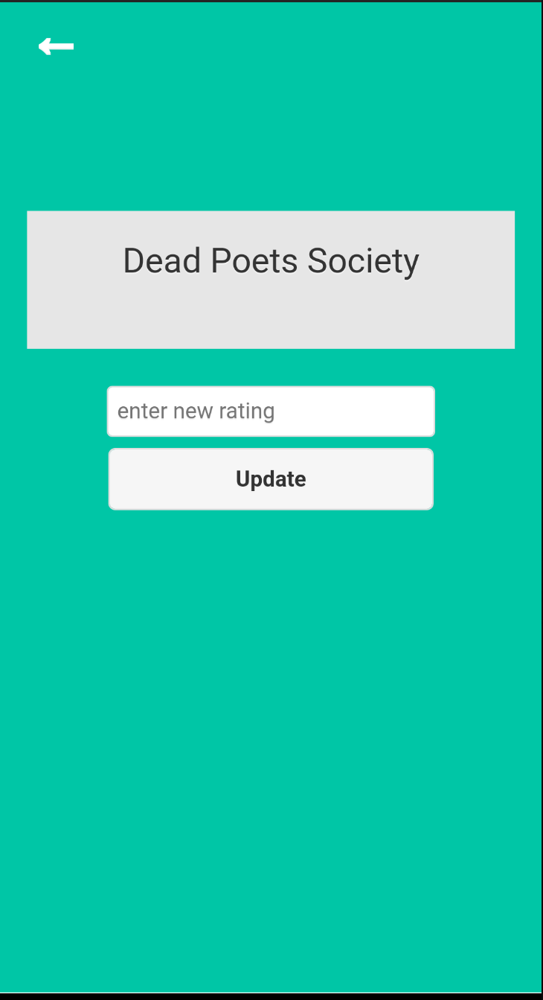

Philly Animal Rescue (Visit Website)
• PAR is a prototype of a centralized system/one stop shop for animal rescue in a city (Philadelphia).
• The website hosts information about animal shelters and clinics, animals available for adoption/fostering from all animal shelters, lost/found/stray animals in the city.
• Users can report stray/lost/found animals on PAR, and PAR will send alerts to many animal shelters based on location, proximity, availability and other factors.
My-Movies App(GitHub repository)
• My Movies is personal movie aggregation database build using Cordova, JQuery Mobile and Android Studio.
• Users can add their favorite movies and rate them. Users are allowed to also change ratings at a later time.
Screenshots of the App

